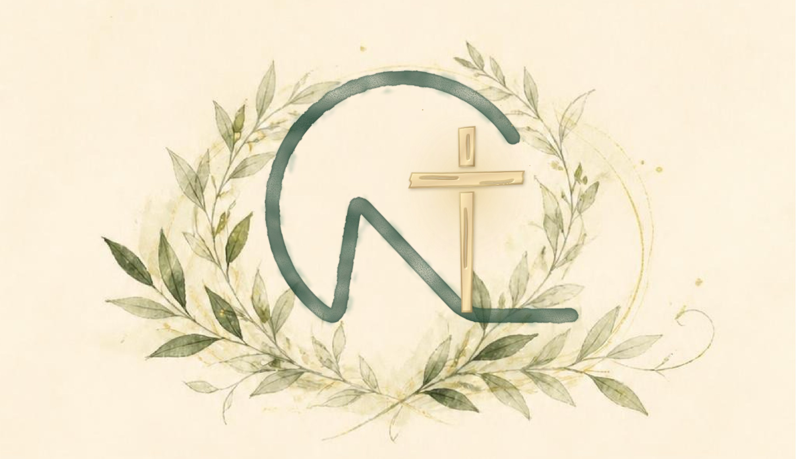
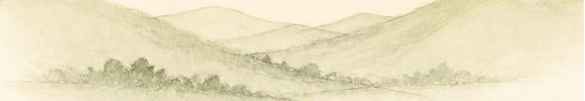

초대합니다
손병민 목사
위임감사예배
2026년 10월 31일 토요일 오전 11시
노진교회당
모시는 글
하나님의 크신 은혜 가운데
위임감사예배를 드리게 되었습니다.
목사와 교우가 한마음으로
주님께 감사드리는 이 자리에
귀한 분들을 정중히 모시고자 합니다.
바쁘시더라도 부디 오셔서
자리를 빛내 주시고
축복하여 주시기를 바랍니다.
2026년 10월대한예수교장로회 노진교회담임목사 손병민 · 교우 일동 드림
이 모든 것 위에 사랑을 더하라
이는 온전하게 매는 띠니라골로새서 3:14
교회 소개
교회 사진 자리
은혜를 먼저 받은 사람들이 모여
말씀을 한 장씩 이어 듣는 공동체입니다.
노진교회는 대한예수교장로회 합동
시화산노회 남부시찰에 속한 교회입니다.
평생 흙과 더불어 살아온 성도의
믿음과 신앙을 다음 세대에게
유산으로 전수하는 복된 교회입니다.
담임목사 손병민
학력
- 계명대 철학과
- 총신대 신대원(105회)
- 총신대 신학대학원 Th.M(과정 중)
사역
- 대구 사월교회
- 대구 반야월교회
- 대전 새로남교회
- 서울 장충교회
가족
- 아내 채애리 사모 · 아들 손필립
예배주일 낮 예배 오전 11시
주일 찬양예배 오후 2시
주일 찬양예배 오후 2시
오시는 길
경기도 화성시 만세구 장안면
화곡로 159-8 노진교회
빨간 표시가 노진교회이고, 길 건너편이 노진초등학교입니다.
주차
식사예배 후 식사 자리가 준비되어 있습니다.
문의노진교회 070-4355-1598
그러나 노진교회는
여호와께 은혜를 입었더라창세기 6:8
